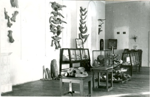

Естественноисторический отдел Нижне-Волжского краевого музея (так назывался наш музей в 1928-1935 гг.) открылся 12 апреля 1928г. в помещении бывшей Первой мужской гимназии на Гимназической, 17 (ныне ул. Некрасова, 17). В 1930 г. вместе с другими отделами музея он был размещён в нынешнем здании, бывшем доме саратовского купца М.А. Устинова, по адресу ул. Покровская, 34 (ныне ул. Лермонтова, 34). Основу первой экспозиции составили коллекции, переданные из естественноисторического музея Саратовского общества естествоиспытателей и любителей естествознания (СОЕ) и геологического музея Саратовского университета.
|  | ||
| Помещение, в котором в 1928 г. был открыт естественноисторический отдел Нижне–Волжского краевого музея. | Фрагменты первой экспозиции отдела. Фото 1928 г. | |
Организатором работы нового отдела был А.Д. Фурсаев, аспирант Нижне-Волжского института краеведения, впоследствии крупный ученый-ботаник, доктор биологических наук, профессор, заведующий кафедрой морфологии и систематики растений СГУ, Заслуженный деятель науки РСФСР. Он проработал в музее три года. |
|
| А.Д. Фурсаев, аспирант Нижне–Волжского института краеведения, основатель естественноисторического отдела музея. Фото 1921. |